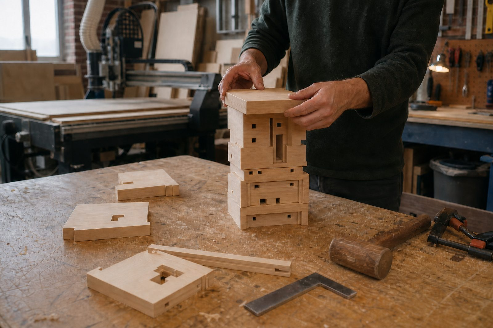
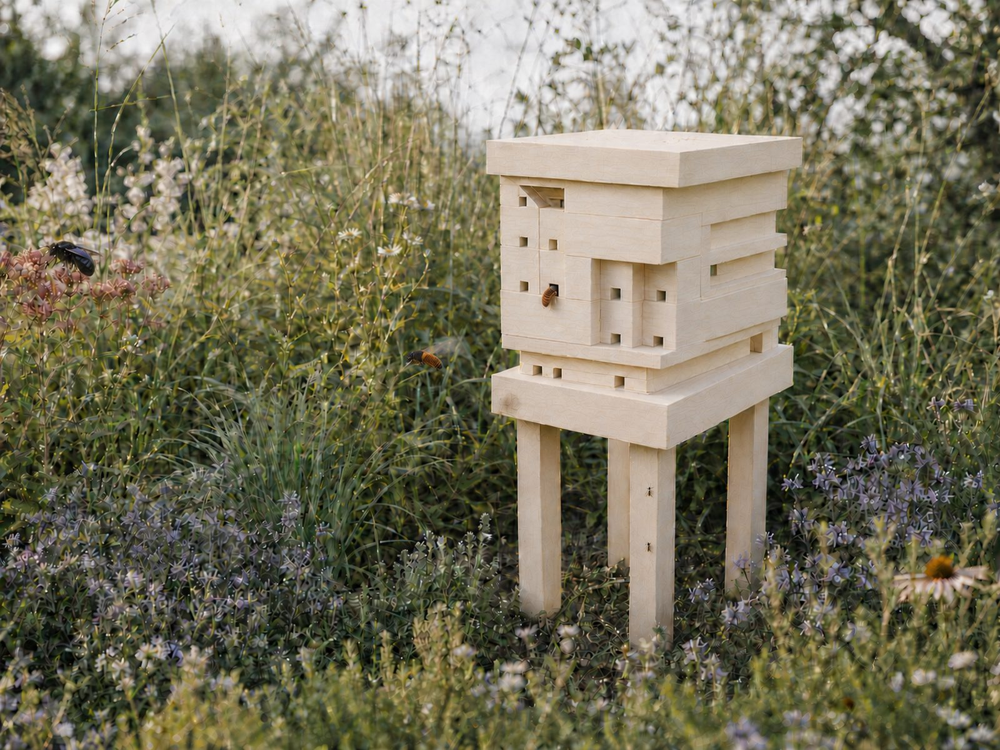
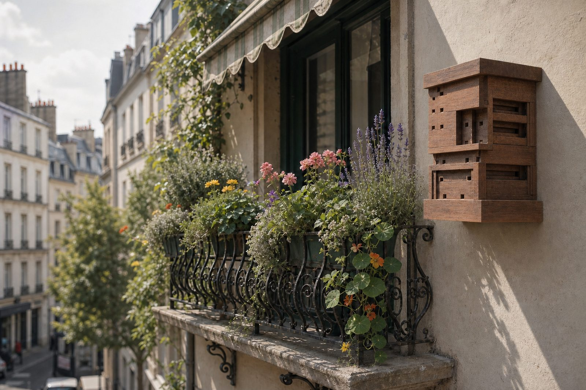
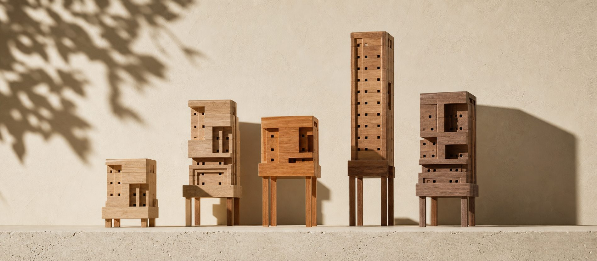

Your design —
Elevations, cut list and assembly order — two A4 pages.
A makerspace is an open workshop with access to a variety of fabrication tools. Think of a gym, but for makers, where you either have a membership or pay per visit. Most have a CNC milling machine, which is what cuts the storeys.
The download is a folder: the drawings and cut list, a picture of your design, the assembly guide, and the export string that regenerates the cutting files. Email the whole folder to a space and ask them to quote. Search for makerspace, fab lab or hackspace and your city — most will quote without you joining first. Find one near you.

Anywhere outside works. In a garden, stand it on legs among the planting or drive the spike into firm soil, about 20 cm down. On a flat roof, keep it low and weighted: a roof is windier than the garden below it, and wind is the one thing these boxes mind.
On a balcony, fix it to the wall at least a metre up, over a window box or a few pots. Whatever you choose, keep it out of strong wind, and keep the holes horizontal — a cavity that tilts down lets rain in, and one that tilts up drains into the nest.

Plant for your region
A single solitary bee can provide as much pollination as 120 honeybees.
A red mason bee will forage up to about 600 metres from her nest, but when flowers are close she works within 50 to 300, and averages nearer 100. Every trip is pollen carried home. She packs each cell with a loaf of it, lays one egg on top and seals the cell — that is provisioning, and it is all the food that larva will ever get. Flowers by the box are the difference between a female provisioning ten cells and provisioning thirty.
Solitary bees are friendly. They don't produce honey and therefore have nothing to protect. They only sting if trod on, and are safe to keep around kids and pets.

See the native bees that nest in your area, and the flowers they pollinate.
Unlike humans, bees see ultraviolet light, and many flowers print landing guides for them in this spectrum we can't see. These images show a simulation of how bees may see, mapping the bee's ultraviolet, blue and green receptors onto blue, green and red so a computer screen can show them. Where no ultraviolet pattern is documented for a species we have applied a colour filter that emulates how it may look.
BEEHOME GEOMETRIES.3dm, and the stacking rules are the
recovered ones. Everything you are looking at around them is new: the
builder and its renderer, this site, the drawings and the build pack it
hands you, the timber choices the original did not offer, and the
herbarium — every species pressed, photographed and then rendered a
second time in bee vision, from the published spectral work rather than
from a filter. Where no ultraviolet pattern has been recorded for a
species, the plate stays plain.
The Bee Home Builder renders the project's original geometry files, modified.
Copy adapted from the original beehome.design, recovered from the Wayback
Machine. The images are new, generated from the original source material and
this rebuild's design intent.
Original Bee Home CC BY 4.0 — SPACE10, Bakken & Bæck, Tanita Klein.
This revival and everything new in it, also CC BY 4.0 — Iván
Langesfeld, 2026.